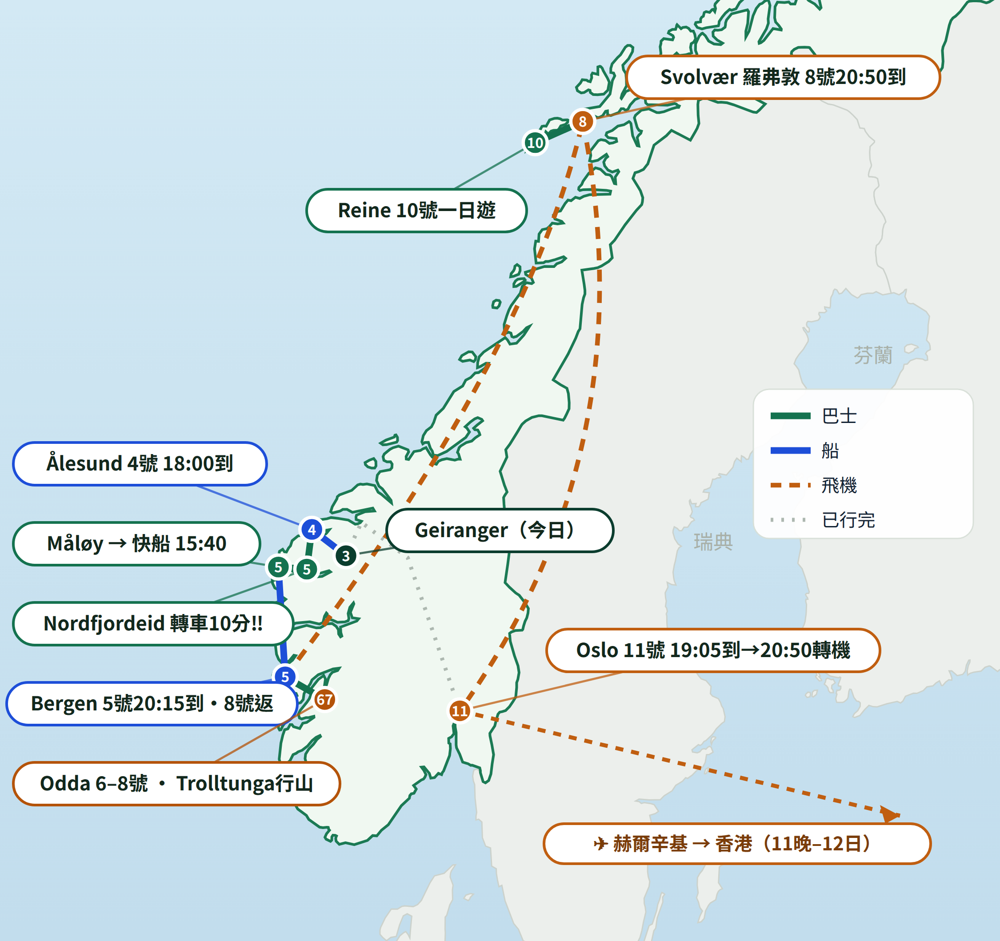

Geiranger → Ålesund → Bergen → Odda（Trolltunga）→ 羅弗敦 → Oslo → 香港
資料來源：你哋 Excel＋官方車票 PDF · 已逐項 fact-check（✅核實／⚠️注意／🚨發現問題）

🖼 下載成張海報PNG（存入相簿隨時睇）| 09:00 | 離屋＋行李寄存碼頭售票處（收費/件） Airbnb 退房限10:00 |
| 09:50 | RIB快艇集合 Geiranger Brygge, Maråkvegen 35（碼頭邊老船屋） 已訂 895 NOK |
| 11:50 | Panorama巴士團集合：遊客中心門前大馬路（12:00–14:00 上 Flydalsjuvet＋Dalsnibba Skywalk） 已訂 710 NOK |
| 14:45 | 攞返行李 → 遊船集合 Geiranger Fjordservice（要早15分鐘） 已訂 |
| 15:00→18:00 | 峽灣遊船 Geiranger → Ålesund（七姊妹瀑布近觀） |
| 18:00 | 落船 Skutvika, Nedre Strandgate 53 → 行去 Airbnb |
| 10:50 | Vy 430 巴士 · 上車位 Skateflukaia（遊客中心旁，即你哋落船嗰個碼頭區） 已訂 |
| 14:15 | 到 Nordfjordeid 巴士站 |
| 14:25 | 轉 Skyss 150號 巴士，車頭寫 Måløy 🚨得10分鐘 已訂 |
| 15:25 | 到 Måløy（行2分鐘去碼頭） |
| 15:40 | Norled 快船 → Bergen 已訂 |
| 20:15 | 到 Bergen Strandkaiterminalen 碼頭 → Airbnb |
| 11:44 | 巴士 930 Bergen → Odda 未買飛 |
| 14:52 | 到 Odda → check-in ＋ 為聽日行山補給（超市買晏、水、朱古力） |
| 21:00 | 行山簡介會 @ Trolltunga Hotel, Odda 跟團included |
| 07:30 | 導賞團出發（Fjord Tours guided hike） 已訂 |
| 全日 | 約20km／10–12小時／爬升約800米 — 全程體力戰 |
| 05:30 | 巴士 930 Odda → Bergen 未買飛 |
| 08:25 | 到 Bergen — 行李寄存車站儲物櫃 → 空窗~7小時：Bryggen 木屋群＋Fløibanen 纜車 |
| 17:20 | Widerøe WF616 → WF836（轉機） 已訂 |
| 20:50 | 到 Svolvær 機場 → check-in（經 Lofoten Suitehotel 攞匙） |
| 08:15→17:30 | Lofoten sightseeing tour（go2lofoten） 已訂 |
| 晚 | 洗衫日（Excel 標咗）＋ 補給 |
| 09:12 | 巴士 742/741 Svolvær → Reine 未買飛 |
| 日間 | Reinebringen 行山（Sherpa石級 · 448米）＋ Reine 漁村 |
| 20:23→23:14 | 巴士 742/741 返 Svolvær 未買飛 |
| 15:10 | Svolvær ✈ Widerøe WF829 ＋ SAS SK4117（轉機） 已訂 · 去機場用 Taxifix app 叫車（Excel 註） |
| 19:05 | 到 Oslo（轉國際線，1小時45分鐘） |
| 20:50 | Oslo ✈ 赫爾辛基（23:15到） |
| 00:35 | 赫爾辛基 ✈ 香港 |
| 17:40 | 🏁 到香港 |
{kind=link}